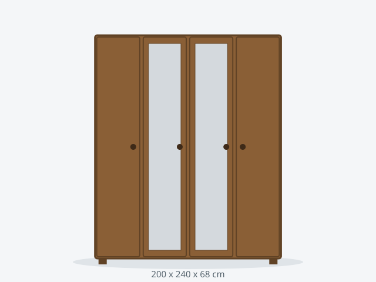

Armario PREMIUM 200 Espejo
Gama alta con puertas de espejo integradas e iluminación LED interior.
1450 €
Últimas unidades · envío en 7-12 días
DisponibilidadÚltimas unidades
Dimensiones200 x 240 x 68 cm
ColoresRoble oscuro, Blanco mate
Baldas7 baldas
Carga por balda45 kg
Peso total máximo420 kg
MaterialTablero melamínico 19 mm
Puertas4 correderas
Montaje200 min
Habitación mínima230 cm ancho x 98 cm fondo
Anclaje a paredSi
Stock2 unidades
Consejo de compra: las puertas con espejo aumentan la sensación de amplitud en habitaciones pequeñas.